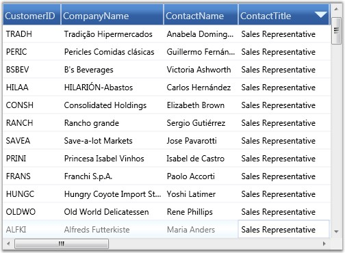

Sorting will arrange the records either in ascending or in descending order of the selected field values. Essential Grid allows you to sort the data against one or more columns. The number of columns on which the sorting can be applied is unlimited.
SortColumns Collection
The information about all the sorted columns for a grid is managed by Grid.SortColumns collection. It is an observable collection of type GridDataSortColumn, where each entry holds the following two properties:
· Name of the sorted column
· SortDirection-an object of type ListSortDirection
You can add, modify and remove any item of this collection to manage the sorted columns of a grid.
Apply Sorting
There are a couple of ways to apply sorting to the grid data. A simple one is just by clicking the column header by which the grid data needs to be sorted. Once the sorting is applied, the grid will show a sort icon in the respective column headers indicating the direction of sorting.
You can also perform sorting through the code. This requires you to define a number of GridDataSortColumn objects specifying the desired column names and sort directions and then add these objects into TableProperties.SortColumns collection. The following code illustrates this:
|
[XAML]
<syncfusion:GridDataControl x:Name="dataGrid" AutoPopulateColumns="True" AutoPopulateRelations="False" ItemsSource="{StaticResource customerSource}"> <syncfusion:GridDataControl.SortColumns> <syncfusion:GridDataSortColumn ColumnName="ContactTitle" SortDirection="Descending" /> </syncfusion:GridDataControl.SortColumns> </syncfusion:GridDataControl> |
The following screen shot shows a GDC enabled with sorting feature:

Figure 169: Sorting by “ContactTitle” column header in descending order
Sorting feature is now enabled in GridData control.
Enable/Disable Sorting
It is possible to prevent sorting on specific grid columns or all the columns at once. Grid.AllowSortproperty is set to true by default. Set the Grid.AllowSort property to false to disable sorting on all the columns. To disallow sorting on a particular column, set its visibleColumn.AllowSort property to false. The following code illustrates setting these properties:
Disable Sort on All Columns
|
[XAML]
<syncfusion:GridDataControl x:Name="dataGrid" ItemsSource="{StaticResource customerSource}" AllowSort="False" /> |
Disable Sort on Single Column (Example-CustomerID)
|
[XAML]
<syncfusion:GridDataControl x:Name="dataGrid" AutoPopulateColumns="True" AutoPopulateRelations="False" ItemsSource="{StaticResource customerSource}"> <syncfusion:GridDataControl.VisibleColumns> <syncfusion:GridDataVisibleColumn MappingName="CustomerID" HeaderText="CustomerID" AllowSort="False" /> </syncfusion:GridDataControl.VisibleColumns> </syncfusion:GridDataControl> |
 Multicolumn Sorting
Multicolumn Sorting